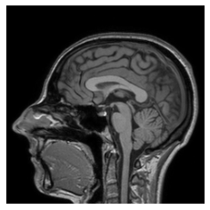

MedBase.item_preprocessing(resample=[1,1,1], reorder=True)
im = MedImage.create('images/IXI002-Guys-0828-T1.nii.gz')
test_eq(type(im), MedImage)Vision core
Load images
med_img_reader
med_img_reader (fn:(<class'str'>,<class'pathlib.Path'>), dtype=<class 'torch.Tensor'>, reorder:bool=False, resample:list=None, only_tensor:bool=True)
Load and preprocess medical image
| Type | Default | Details | |
|---|---|---|---|
| fn | (<class ‘str’>, <class ‘pathlib.Path’>) | Image path | |
| dtype | _TensorMeta | Tensor | Datatype (MedImage, MedMask, torch.Tensor) |
| reorder | bool | False | Whether to reorder the data to be closest to canonical (RAS+) orientation. |
| resample | list | None | Whether to resample image to different voxel sizes and image dimensions. |
| only_tensor | bool | True | Whether to return only image tensor |
MetaResolver
MetaResolver (*args, **kwargs)
A class to bypass metaclass conflict: https://pytorch-geometric.readthedocs.io/en/latest/_modules/torch_geometric/data/batch.html
MedBase
MedBase (*args, **kwargs)
A class that represents an image object. Metaclass casts x to this class if it is of type cls._bypass_type.
MedImage
MedImage (*args, **kwargs)
Subclass of MedBase that represents an image object.
MedMask
MedMask (*args, **kwargs)
Subclass of MedBase that represents an mask object.
ax = im.show(anatomical_plane=0)